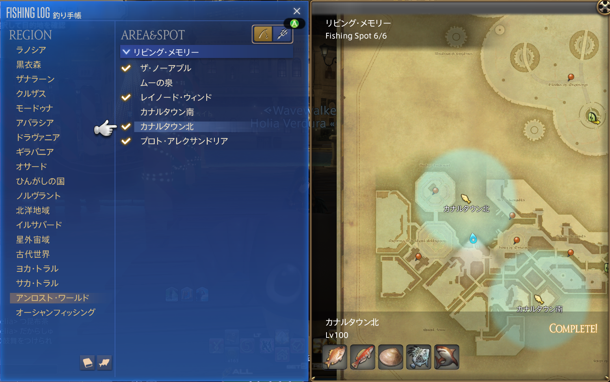

★カナルタウン北 鮫釣り大会
～鮫と漁師と黄金郷～
◆ 目的 ⭐
収集価値の高い「カッパーシャーク」をたくさん釣る
◆ 参加資格 ✋
必要漁師レベルはLv100 ILは690～750(※出来れば高い方がいい)
黄金のレガシー最終マップ「リビングメモリー」に到達済み
◆ 勝利条件 👑
制限時間（30分）以内に最も多くスコアを稼いだチームが勝利となります。
スコアの基準は後述しますが、釣った数、収集価値の最大値、橙貨に交換した際の合計値がスコアになります。
◆ ミラプリテーマ👚
今回のテーマは
エンジョイカナルタウン
です。
◆ チーム分け 🧑🤝🧑
ダイスで完全ランダム
参加人数が素数になったら？
参加者人数とチーム構成： 1 1 1
◆ チームスコア計算 📊
釣果数🎣 チームメンバーが釣り上げたカッパーシャーク(収集品)の合計値 x ４００ｐｔ 例：メンバー全員の釣果数が10匹→４,０００ｐｔ ソロPTの場合、釣り上げたカッパーシャーク(収集品)の合計値 x ７５０ｐｔ
最大収集価値📏 チームメンバーが釣り上げたカッパーシャーク(収集品)の中で最大の収集価値 x ２ｐｔ 例：メンバーが釣り上げた中で最も大きい収集価値が2500→５,０００ｐｔ ソロPTの場合でも計算式は同じ。
橙貨値🟠 チームメンバーが稼いだ橙貨(カッパーシャークを橙貨に変換した際)の合計値 x ５ｐｔ 例：メンバー全員の稼いだ橙貨の合計が970→４,８５０ｐｔ ソロPTの場合、稼いだ橙貨(カッパーシャークを橙貨に変換した際)の合計値 x １０ｐｔ
◆ 個人評価部門 🥇
たくさん釣ったで賞🎣 最も多くカッパーシャーク(収集品)を釣り上げた者 賞金：300,000ギル
大物釣ったで賞📏 最も大きな(収集価値が高い)カッパーシャーク(収集品)を釣り上げた者 賞金：300,000ギル
真っ先に釣ったで賞👑 誰よりも早く最初の１匹を釣り上げた者 賞金：300,000ギル
※同率1位が複数いた場合は部門毎に1位の人数で賞金を頭割り
◆ その他ルール 📜
制限時間終了後、キャスティング中であった場合は、継続してOK。
餌はゴーストニッパー（FC支給）を使用 ※1人50個支給
食事はナシゴレン(FC支給)を使用 ※1人1個支給
◆ ターゲット 🦈
カッパーシャーク 時間条件：無し 天候条件：曇り or 霧 特殊条件：直感付与 収集価値と獲得橙貨 1,141～：７８ 1,911～：９７ 2,682～：１５６
◆釣り方🎣
リビングメモリーのカナルタウン北に向かう。

【収集品採集】バフをONにする。
【釣り餌】を使用し、「ゴーストニッパー」を選択する。
【キャスティング】を使用し、釣りを開始する。
【アンビシャスルアー】を１～３回使用し、直感が付与されるか確認する。
このブラウザは video タグをサポートしていません。
強震(！！)が来たら【フッキング】を使用し、カッパーシャークを釣り上げる。
収集品獲得確認画面が出るので「はい」を選択しカッパーシャークを収集品にする。
上記手順を繰り返し、カッパーシャークを釣り続ける。
参考動画
このブラウザは video タグをサポートしていません。
◆高いスコアを狙うコツ✨
【大物狙い】バフを使用する。
1匹目
2匹目
3匹目
4匹目
ペーシェンスⅡ
GP610
GP660
GP710
GP760
大物狙い
GP200
GP400
GP600
GP800
※【ペーシェンスⅡ】の消費GPはバフにGP560、1匹毎にストロングフッキングGP50消費する計算
【大物の知識】バフを使用する。
ハズレの魚を釣り上げない。
このブラウザは video タグをサポートしていません。
このブラウザは video タグをサポートしていません。
◆ スキル一覧 📖
釣り餌を選ぶスキル。
釣りを開始するスキル。
釣り上げスキル。
掛かった魚を釣らずに竿だけ上げるスキル。
魚が掛かるまでの時間を短縮するスキル。
絶対にONにすることを忘れないように。
次に釣る魚を確定でラージサイズにするスキル。
ラージサイズの魚を釣ったときに溜まるBF(ビッグフィッシャー)を2消費して使うスキル。
細かい説明をするととても長くなるので超省略した説明になるが、今回の対象を狙う為に必要なスキル。